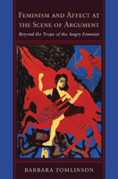

Showing how both feminist and anti-feminist arguments work, and providing tools for social justice and changing civic life
Showing how both feminist and anti-feminist arguments work, and providing tools for social justice and changing civic life


 Showing how both feminist and anti-feminist arguments work, and providing tools for social justice and changing civic life
Showing how both feminist and anti-feminist arguments work, and providing tools for social justice and changing civic life

|  |
Feminism and Affect at the Scene of ArgumentBeyond the Trope of the Angry FeministBarbara Tomlinsonpaper EAN: 978-1-43990-247-9 (ISBN: 1-4399-0247-X) |
"Tomlinson provides an interesting window into how discursive power is built, dismantled, and rebuilt. This book is brave: it takes on three different disciplinary areas and ones not likely to be thought of together—socio-legal studies, musicology, and science studies. Tomlinson deftly demonstrates how powerful and insightful feminist arguments can be deflected, dismantled, or misrepresented by rhetoric that is not simply misogynist but rather generated within the rhetorical fields of the disciplinary in response or reaction to feminism itself. Rarely have I seen someone so thoroughly analyze how rhetoric operates successfully as politically-inflected argument."
—Stephanie A. Smith, Professor of English, University of Florida
Are feminists really angry, unreasoning, man-haters who argue only from an emotional perspective as some claim? Does the incessant repetition of this trope make anti-feminism and misogyny a routine element in everyday speech? And does this repetition work towards delegitimizing feminist arguments and/or undermining feminist politics? How do skilled feminist writers deploy affect to advance feminist ideas? In Feminism and Affect at the Scene of Argument, Barbara Tomlinson addresses these questions, providing a lucid examination of the role of affect in feminist and antifeminist academic arguments.
Using case studies from controversies in socio-legal studies, musicology, and science studies, among other disciplines, Tomlinson examines the rhetorics of anger, contempt, betrayal, intensification, and ridicule. She employs a set of critical tools—feminist "socio-forensic" discursive analysis—that will prove indispensible for understanding and countering tropes like that of the angry feminist. Moreover, these tools will advance feminism, which, she argues, is generated in and by arguments with allies and antagonists.
In an era of debates that generate more heat than light, Feminism and Affect at the Scene of Argument offers a timely provocation for transforming the terms of reading and writing in scholarship and civic life.
Excerpt available at www.temple.edu/tempress
"Tomlinson perceptively reveals intersections between arenas of social life and scholarship that we have been taught to contain within disciplining boxes. Her insights enable us to turn efforts to silence critical voices into sites for discerning links between affect and power—and disrupting them."
—Charles L. Briggs, co-author of Stories in the Time of Cholera
"Barbara Tomlinson handily moves the feminist project into the realm of argument, where she shakes up the very foundation of traditional argument. By interrogating the ‘trope of the angry feminist,’ Tomlinson demonstrates the ways gendered, raced, and classed iterations of power saturate argument, its scenes, valences, and, most of all, normalized praxes. Her wide-ranging excursion—from law and consumer culture to musicology and biology—reveals how tethered we all are to dominant (authoritative) discourses, despite our resistance and repudiation. Her analysis is brilliant; her examples are extraordinarily powerful."
—Cheryl Glenn, Liberal Arts Research Professor of English and Women's Studies, Penn State University
"This scholarly, original approach provides feminists with a viable means to 'turn hegemony on its head'; by using arguments designed to silence and ridicule them into arenas that reveal gendered power and its working, women can effect broad-ranging change. Summing Up: Highly recommended."
—
Choice
"To build the scene of her own argument, Tomlinson compiles a compelling archive, with texts ranging from Dr. Laura’s antifeminist rants on her radio show to Professor Edward Shil’s commentary on civility, from Patricia J. Williams’s The Alchemy of Race and Rights to the Biology and Gender Study Group’s text 'The Importance of Feminist Critique for Contemporary Cell Biology.' This multidisciplinary archive is the greatest strength of Tomlinson’s book.... [F]eminist scholars and rhetoricians interested in the affective dimensions of the politics of containment will find her book useful. Indeed, the dynamic range of texts to which Tomlinson turns her attention and the important feminist questions of power and voice her readings address carry the project and engage the reader who becomes drawn in by the scene of argument."
—Signs
Acknowledgments
1. Transforming the Terms of Reading: Ideologies of Argument and the Trope of the Angry Feminist
2. Ideologies of Style: Discursive Policing and Feminist Intersectional Argument
3. Anger: Grammars of Affect and Authority
4. Tough Babies, or Anger in the Superior Position
5. Faux Feminism and the Rhetoric of Betrayal
6. Intensification and the Discourse of Decline
7. Ridicule: Phallic Fables and Spermatic Romance
8. The Labor of Argument and Feminist Futures
Notes
References
Index
Barbara Tomlinson is Associate Professor of Feminist Studies at the University of California, Santa Barbara. She is the author of Authors on Writing: Metaphors and Intellectual Labor. In 2009, she received the Academic Senate Distinguished Teaching Award, University of California, Santa Barbara.
Women's Studies
Gender Studies
Cultural Studies
© 2015 Temple University. All Rights Reserved. This page: http://www.temple.edu/tempress/titles/2086_reg.html.